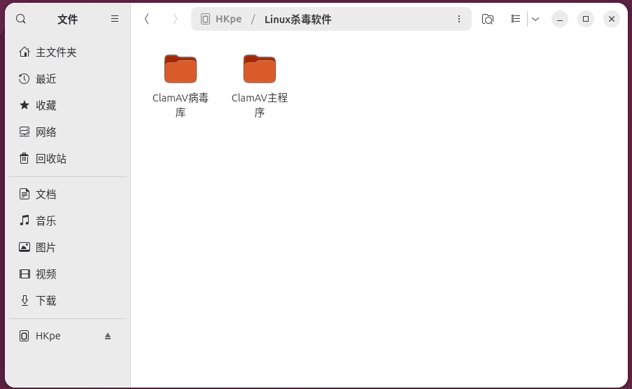
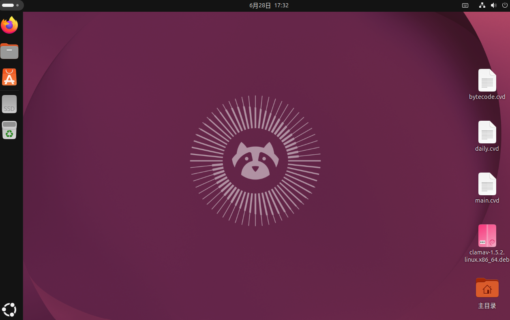
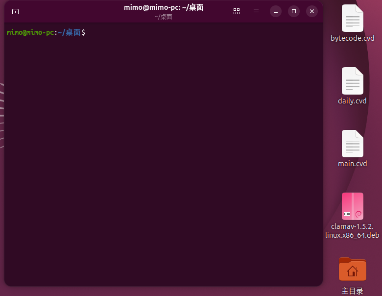
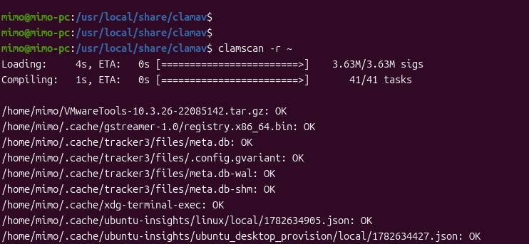

ClamAV杀毒软件 linux安装（适用于Debian系）
参考链接：
主程序：https://www.clamav.net/downloads
main.cvd：https://database.clamav.net/main.cvd
daily.cvd：https://database.clamav.net/daily.cvd
bytecode.cvd：https://database.clamav.net/bytecode.cvd
前期准备：
1 | 1、ClamAV主程序：clamav-1.5.2.linux.x86_64.deb |
具体步骤：
1、杀毒软件存入U盘，U盘插入需要安装软件的linux电脑：

2、分别进入ClamAV主程序、ClamAV病毒库文件夹，复制文件到桌面

3、右键桌面打开终端（或使用快捷键Ctrl+Alt+T）

4、使用sudo dpkg安装主程序 “clamav-1.5.2.linux.x86_64.deb”
1 | sudo dpkg -i clamav-1.5.2.linux.x86_64.deb |

“此时会提示输入root密码，正常输入密码回车即可完成安装（输入密码时不会显示输入内容，正常输入完后回车即可）”

至此主程序安装完成*（ClamAV主程序默认不带图形化界面，使用命令行）*
5、导入病毒库
1 | #病毒库目录：/usr/local/share/clamav |

“确保终端始终处在~/桌面目录下再进行复制操作”
1 | #查看是否复制成功 |

1 | #在/usr/local/share/clamav目录下可以使用命令查看病毒库最新日期 |

6、使用clamscan命令进行病毒扫描
1 | ##扫描文件 |
这里我们使用 -r 来扫描一遍home目录
1 | clamavscan -r /home |

等待片刻后输出结果：

1 | #输出示例 |
以下空白
本博客所有文章除特别声明外，均采用 CC BY-NC-SA 4.0 许可协议。转载请注明来源 地球人But's Blog！
评论